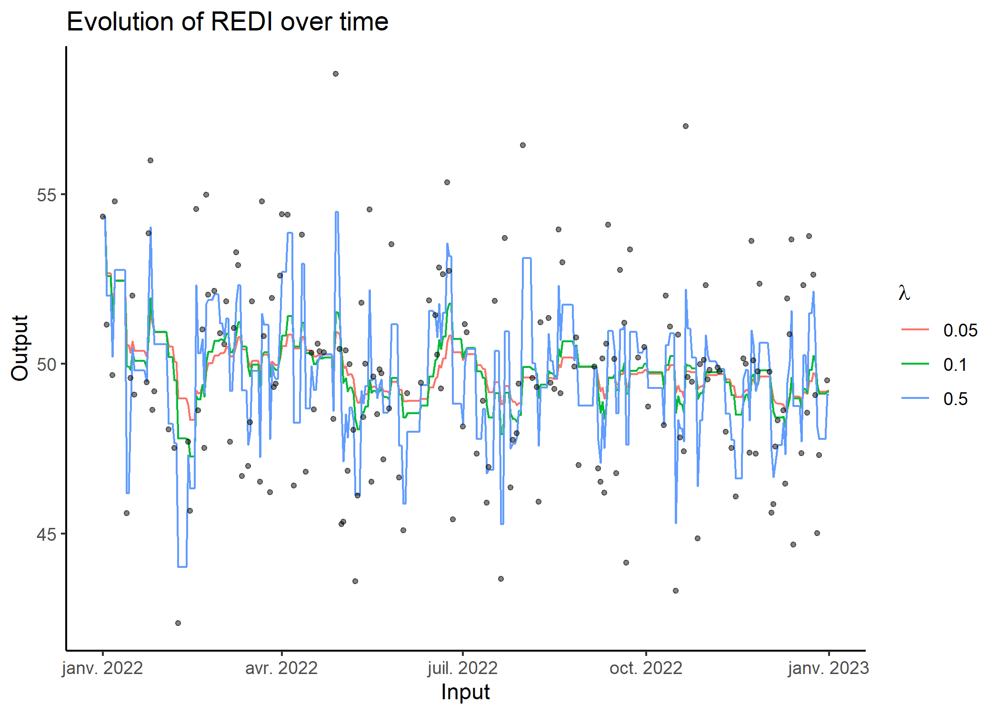
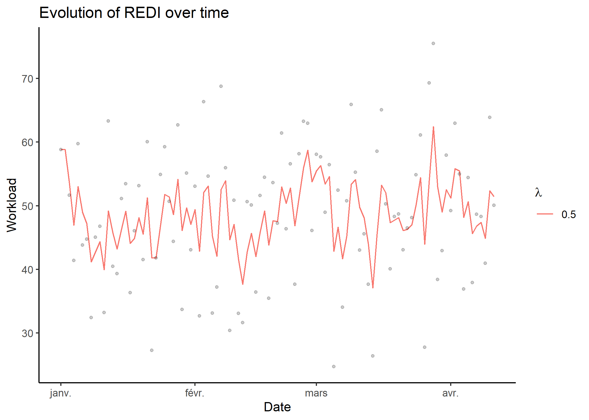
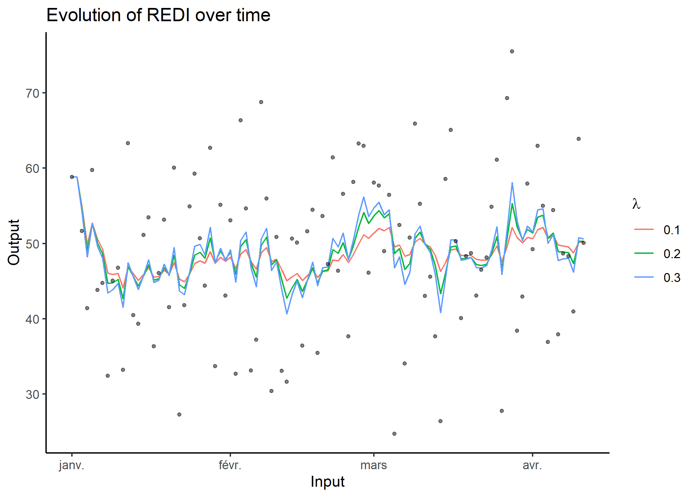

The REDI package implements the Robust Exponential Decreasing Index (REDI). It represents a measure of cumulated workload, is robust to missing data and provides control of the decreasing influence of the workload over time.
REDI provides various functions to format data, compute REDI and visualise results in a simple and convenient way.
Issa Moussa, Arthur Leroy et al. (2019): Robust Exponential Decreasing Index (REDI): adaptive and robust method for computing cumulated workload. BMJ Open Sport & Exercise Medicine, https://bmjopensem.bmj.com/content/bmjosem/5/1/e000573.full.pdf.
Installation
You can install the development version of REDI from GitHub with:
#install.packages("devtools")
devtools::install_github("Grenouil/REDI")REDI in a nutshell
Here is a basic example on how to simulate a dataset with the adequate format, compute REDI values over time and display results.
library(REDI)
set.seed(42)
## Generate a synthetic dataset with the correct format
data = simu_db()
data
#> # A tibble: 366 × 2
#> Input Output
#> <date> <dbl>
#> 1 2022-01-01 54.3
#> 2 2022-01-02 NA
#> 3 2022-01-03 51.1
#> 4 2022-01-04 NA
#> 5 2022-01-05 NA
#> 6 2022-01-06 49.7
#> 7 2022-01-07 54.8
#> 8 2022-01-08 NA
#> 9 2022-01-09 NA
#> 10 2022-01-10 NA
#> # … with 356 more rows
## Compute REDI over all observations for different Lambda values and display results
res = redi(data)
res
#> # A tibble: 1,098 × 4
#> Input Output REDI Lambda
#> <date> <dbl> <dbl> <dbl>
#> 1 2023-01-01 NA 49.2 0.05
#> 2 2022-12-31 49.5 49.2 0.05
#> 3 2022-12-30 NA 49.2 0.05
#> 4 2022-12-29 NA 49.2 0.05
#> 5 2022-12-28 NA 49.2 0.05
#> 6 2022-12-27 47.3 49.2 0.05
#> 7 2022-12-26 45.0 49.3 0.05
#> 8 2022-12-25 49.1 49.7 0.05
#> 9 2022-12-24 52.6 49.7 0.05
#> 10 2022-12-23 NA 49.5 0.05
#> # … with 1,088 more rowsDetailed workflow
For an advanced use of the package, here is a quick step-by-step guide.
Data simulation
In order to test different features of the package, the simu_db() function is provided as a handy way to generate synthetic data with the correct format for subsequent REDI computations.
set.seed(42)
## Generate a synthetic dataset, containing dates (Inputs) from '2022-01-01' to '2023-01-01' and observations (Outputs) following a Gaussian distribution (mean = 50, var = 10), with 50% of missing values.
simu_data <- simu_db(start_date = '2022-01-01',
end_date = '2023-01-01',
by = 'day',
output_distrib = 'Gaussian',
ratio_missing = 0.5,
mean = 50,
var = 10)
simu_data
#> # A tibble: 366 × 2
#> Input Output
#> <date> <dbl>
#> 1 2022-01-01 54.3
#> 2 2022-01-02 NA
#> 3 2022-01-03 51.1
#> 4 2022-01-04 NA
#> 5 2022-01-05 NA
#> 6 2022-01-06 49.7
#> 7 2022-01-07 54.8
#> 8 2022-01-08 NA
#> 9 2022-01-09 NA
#> 10 2022-01-10 NA
#> # … with 356 more rowsAs displayed above, any dataset processed in REDI should provide 2 columns: one corresponding to Input values (e.g. time) and another to Output values (e.g. workload).
Convert a dataset to the correct format with format_data()
However, a real-life dataset will generally not have the correct format to compute REDI directly. Therefore, the format_data() function is designed to help with this process by identifying the columns corresponding to the Input (e.g the date) and the Output (e.g. the workload) variables. The Input column should be defined with a correct Date type. The function will automatically identify missing values between each observations, considering the by argument as the time increment (for instance with ‘day’, the default, each day between two observed dates is considered missing). Finally, Output values for duplicated Input values can be summarised according to the summarise_duplicate argument.
## Create a dummy real-life dataset
raw_db <- data.frame(
'Var1' = 1:100,
'Var2' = rnorm(n = 100, mean = 50, sd = 10),
'Var3' = c(
as.Date("2022/1/1"),
seq(from = as.Date("2022/1/3"), by = "day", length.out = 99)
)
)
head(raw_db)
#> Var1 Var2 Var3
#> 1 1 58.84844 2022-01-01
#> 2 2 51.63431 2022-01-03
#> 3 3 41.39630 2022-01-04
#> 4 4 59.74555 2022-01-05
#> 5 5 43.81340 2022-01-06
#> 6 6 44.72518 2022-01-07
## Convert the dataset to the correct format (adding the missing data point on 2022-01-02)
db <- format_data(
data = raw_db,
input = 'Var3',
output = 'Var2',
by = 'day',
format = '%Y%m%d'
)
db
#> # A tibble: 101 × 2
#> Input Output
#> <date> <dbl>
#> 1 2022-01-01 58.8
#> 2 2022-01-02 NA
#> 3 2022-01-03 51.6
#> 4 2022-01-04 41.4
#> 5 2022-01-05 59.7
#> 6 2022-01-06 43.8
#> 7 2022-01-07 44.7
#> 8 2022-01-08 32.4
#> 9 2022-01-09 45.0
#> 10 2022-01-10 46.8
#> # … with 91 more rowsComputation of REDI with compute_redi()
To compute a single REDI value, simply use the compute_redi() function. It will correspond to the REDI value for the most recent observed Input in the dataset, using all data from the past. Feel free to adapt the λ coefficient, controlling the exponential decay of weights over time, depending on the context.
## Compute REDI at the current date (2022-04-11 in this example)
compute_redi(db, coef = 0.05)
#> [1] 49.85942
max(db$Input)
#> [1] "2022-04-11"Computation of multiple REDI values over time with loop_redi()
To sequentially compute REDI for all Input values in the dataset with speed-up vectorised operations, one can use the loop_redi() function.
## Apply loop_redi() to compute REDI for all dates in the dataset
db_redi <- loop_redi(data = db, coef = 0.5)
db_redi
#> # A tibble: 101 × 4
#> Input Output REDI Lambda
#> <date> <dbl> <dbl> <dbl>
#> 1 2022-04-11 50.1 51.4 0.5
#> 2 2022-04-10 63.9 52.3 0.5
#> 3 2022-04-09 40.9 44.9 0.5
#> 4 2022-04-08 48.3 47.4 0.5
#> 5 2022-04-07 48.7 46.8 0.5
#> 6 2022-04-06 37.9 45.6 0.5
#> 7 2022-04-05 54.4 50.6 0.5
#> 8 2022-04-04 36.9 48.2 0.5
#> 9 2022-04-03 55.0 55.5 0.5
#> 10 2022-04-02 63.0 55.8 0.5
#> # … with 91 more rowsDisplay results with plot_redi()
The plot_redi() function is proposed to display the results, and provides several options to personalise the graphs.
## Display results as time series of REDI values
plot_redi(redi = db_redi,
x_axis = 'Date',
y_axis = 'Workload',
plot_data = TRUE)
#> Warning: Removed 1 rows containing missing values (`geom_point()`).
One can customise graphs by:
- changing the name of the axis by replacing the default values of
x_axisandy_axis; - masking the original data in black points by setting
plot_datatoFALSE.
Full workflow with the wrapper function redi()
As presented in the nutshell example, all the previous steps (formatting, computations, plotting) are wrapped into the redi() function. In addition to the arguments of the previous functions, it is also possible to provide a vector to the coef argument to display results for different λ values.
## Apply redi() on db and provide a vector of coefficients.
db_full_redi <- redi(data = db, coef = c(0.1, 0.2, 0.3), plot = TRUE)
db_full_redi
#> # A tibble: 303 × 4
#> Input Output REDI Lambda
#> <date> <dbl> <dbl> <dbl>
#> 1 2022-04-11 50.1 50.2 0.1
#> 2 2022-04-10 63.9 50.2 0.1
#> 3 2022-04-09 40.9 48.7 0.1
#> 4 2022-04-08 48.3 49.5 0.1
#> 5 2022-04-07 48.7 49.7 0.1
#> 6 2022-04-06 37.9 49.8 0.1
#> 7 2022-04-05 54.4 51.0 0.1
#> 8 2022-04-04 36.9 50.7 0.1
#> 9 2022-04-03 55.0 52.1 0.1
#> 10 2022-04-02 63.0 51.8 0.1
#> # … with 293 more rows